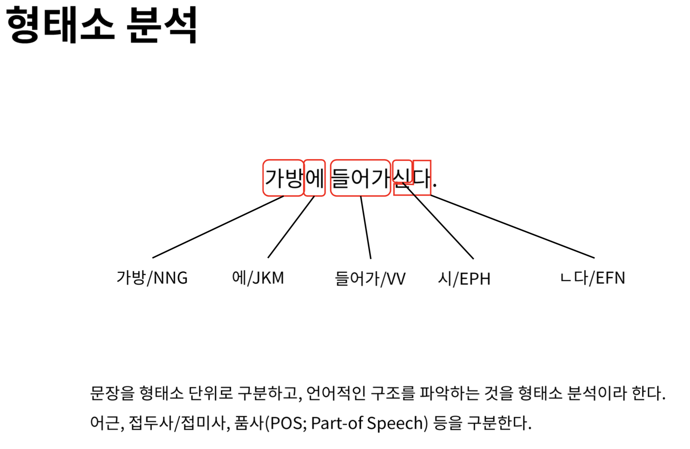
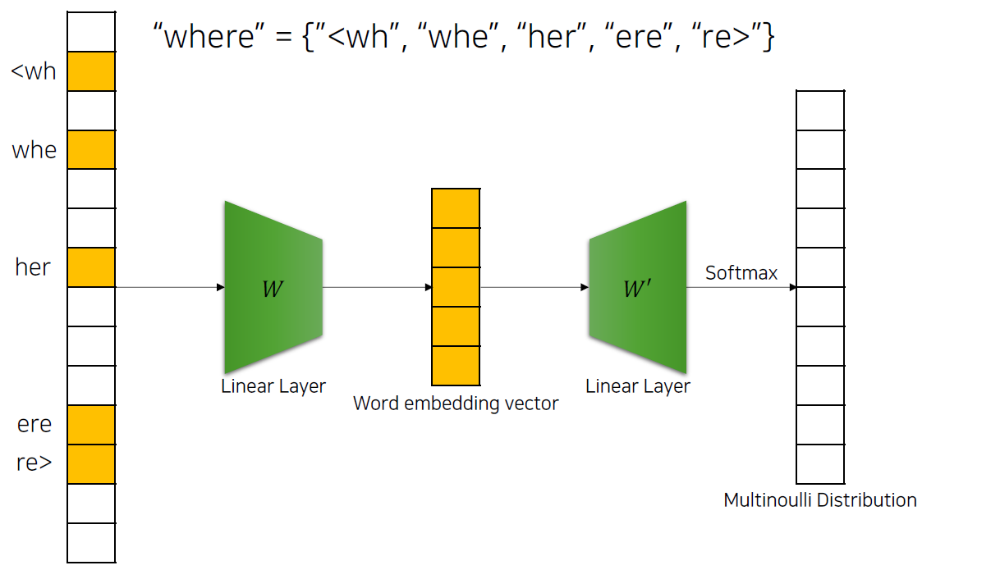
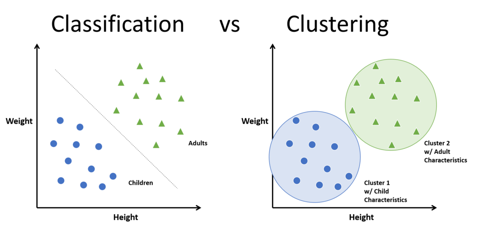
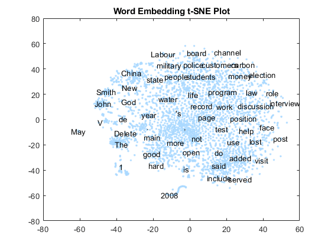

한국어 임베딩과 R언어
자연어처리의 새로운 패러다임
홍성학
2022년 9월 24일
한국어 임베딩과 R언어
자연어처리의 새로운 패러다임
과거의 한국어 자연어처리 한계를 극복하고
워드임베딩을 중심으로 한 현대적 접근법과
R에서 활용 가능한 도구들을 소개합니다
목차
- 한국어 자연어처리의 역사와 한계
- 워드임베딩: 새로운 패러다임
- 주요 임베딩 기법들
- R에서의 구현과 활용
- 실제 응용 사례
- 미래 전망
한국어 자연어처리의 과거 문제점
3가지 주요 장벽
- 글자 인코딩 문제
- EUC-KR, CP949 등 다양한 인코딩
- 문자 깨짐 현상 (mojibake)
- 언어 구조적 특성
- 교착어적 특성 (조사, 어미 변화)
- 복잡한 형태소 구조
- 리소스 부족
- 말뭉치 데이터 부족
- 연구 지원 및 도구 부족
문자 인코딩 문제 예시

과거 웹사이트에서 흔히 볼 수 있었던 한글 깨짐 현상
현재 상황: 개선과 과제
✅ 해결된 문제들
- 인코딩 문제: UTF-8 표준화로 해결
- 도구 발전: 다양한 형태소 분석기 등장
⚠️ 여전한 과제들
- 언어 구조적 복잡성: 여전히 어려움
- 리소스 격차: 영어권 대비 부족
- 도메인별 특화: 분야별 맞춤형 도구 부족
한국어 형태소 분석기 생태계
주요 도구들
- 은전한닢(MeCab): 일본어 기반, 한국어 적용
- 노리(Nori): Elasticsearch 내장
- 꼬꼬마(Kkma): 서울대 개발
- 한나눔(Hannanum): KAIST 개발
- OKT: 오픈소스 한국어 처리기
- Soynlp: 비지도 학습 기반
- SentencePiece: 구글 개발
기술적 접근
- 기계학습 기반: HMM, CRF 모델 활용
- 말뭉치: 21세기 세종계획 + 추가 데이터
형태소 분석 과정

한국어 문장의 형태소 분석 과정 예시
구문 분석과 개체명 인식
구문 분석기 (Syntactic Parser)
- 문장을 트리 구조로 분석
- 주어, 목적어, 서술어 관계 파악
- 예: “아버지가 식사를 하신다”
- 주어: “아버지가”
- 목적어: “식사를”
- 서술어: “하신다”
개체명 인식 (NER)
- 인명, 지명, 기관명, 제품명 등 추출
- 정보 추출의 핵심 기술
한국어 처리의 고유 난제
1. 띄어쓰기 문제
분리는 가능하지만 결합은 어려움
아버지가방에들어가신다 → 아버지가 방에 들어가신다 ✓
아버지 가방을 고쳐드렸다 → 아버지가방을 고쳐드렸다 ✗2. 복합명사 처리
문장 형태의 개체명 - “이상한 변호사 우영우” - “오징어게임”
- “카라마조프가의 형제들”
전통적 텍스트 처리 방법
TF-IDF (Term Frequency-Inverse Document Frequency)
장점 - 정보 검색에 적합 - 구현이 간단 - 해석이 용이
단점 - 단어 순서 무시 (Bag of Words) - 의미적 유사성 파악 어려움 - 희소 벡터 (Sparse Vector)
TF-IDF 시각화

TF-IDF 계산 과정과 벡터 표현
R에서 TF-IDF 구현
tidytext 패키지 활용
library(dplyr)
library(tidytext)
# 문서별 단어 빈도 계산
book_words <- documents %>%
unnest_tokens(word, text) %>%
count(document, word, sort = TRUE)
# TF-IDF 계산
book_tfidf <- book_words %>%
bind_tf_idf(word, document, n) %>%
arrange(desc(tf_idf))superml 패키지 활용
워드임베딩: 패러다임의 전환
워드임베딩: 패러다임의 전환
기존 방식의 한계
- 희소 표현: 대부분 0인 고차원 벡터
- 의미 부재: 단어 간 의미적 관계 파악 불가
- 문맥 무시: 주변 단어 정보 활용 불가
워드임베딩의 혁신
- 밀집 표현: 낮은 차원의 실수 벡터
- 의미 보존: 유사한 의미의 단어는 유사한 벡터
- 문맥 활용: 주변 단어를 고려한 학습
워드임베딩 개념도

단어를 고차원 벡터 공간에 매핑하는 워드임베딩
워드임베딩의 장단점
✅ 장점
- 높은 성능: 대량 데이터로 우수한 결과
- 의미적 유사성: 형태적 매치 → 의미적 매치
- 자동화: 인간의 개입 최소화
- 전이학습: 사전 훈련 모델 활용 가능
⚠️ 단점
- 계산 비용: 많은 GPU 자원 필요
- 데이터 의존성: 대량의 학습 데이터 필요
- 블랙박스: 해석이 어려움
- 예측 불가능성: 예상 밖의 결과
주요 워드임베딩 기법들
1세대: 정적 임베딩
- Word2Vec (2013, Google)
- GloVe (2014, Stanford)
- FastText (2016, Facebook)
2세대: 문맥적 임베딩
- ELMo (2018, AllenNLP)
- BERT (2018, Google)
- GPT (2018, OpenAI)
주요 임베딩 기법들
Word2Vec: 신경망 기반 임베딩
두 가지 아키텍처
CBOW (Continuous Bag of Words) - 주변 단어로 중심 단어 예측 - 작은 데이터셋에 적합
Skip-gram - 중심 단어로 주변 단어 예측 - 큰 데이터셋에 적합
Word2Vec 아키텍처

CBOW와 Skip-gram 모델의 구조 비교
R에서 Word2Vec 구현
wordVectors 패키지
library(wordVectors)
# 모델 훈련
model <- train_word2vec(
train_file = "corpus.txt",
output_file = "word2vec_model.bin",
vectors = 100, # 벡터 차원
threads = 4, # 스레드 수
window = 5, # 윈도우 크기
iter = 5 # 반복 횟수
)
# 모델 로드 및 유사 단어 검색
model <- read.binary.vectors("word2vec_model.bin")
similar_words <- nearest_to(model, model[["마케팅"]], 10)GloVe: 글로벌 벡터
핵심 아이디어
- 동시 등장 행렬 활용
- 전역 통계 정보 활용
- Word2Vec + LSA 장점 결합
특징
- 병렬 처리 가능
- 메모리 효율적
- 안정적인 성능
R에서 GloVe 구현
text2vec 패키지
library(text2vec)
# 어휘 생성
vocab <- create_vocabulary(iterator)
vocab <- prune_vocabulary(vocab, term_count_min = 5)
# 동시 등장 행렬 생성
vectorizer <- vocab_vectorizer(vocab)
tcm <- create_tcm(iterator, vectorizer, skip_grams_window = 5)
# GloVe 모델 훈련
glove <- GlobalVectors$new(rank = 50, x_max = 10)
wv_main <- glove$fit_transform(tcm, n_iter = 10)
wv_context <- glove$components
word_vectors <- wv_main + t(wv_context)FastText: 서브워드 임베딩
혁신적 특징
- 서브워드 활용: 단어 내부 구조 고려
- OOV 문제 해결: 미등록 단어 처리 가능
- 언어 독립적: 다양한 언어에 적용 가능
- 빠른 속도: GPU 없이도 고속 처리
한국어 처리 장점
- 복합어 처리 우수
- 신조어 대응 가능
- 형태소 변화 고려
FastText 서브워드 처리

FastText의 서브워드 기반 임베딩 생성 과정
R에서 FastText 구현
fastText 패키지
library(fastText)
# 모델 훈련 설정
params <- list(
command = 'skipgram',
lr = 0.05,
dim = 100,
ws = 5,
epoch = 5,
minCount = 5,
neg = 5,
wordNgrams = 2,
loss = 'ns',
bucket = 2000000,
thread = 4,
lrUpdateRate = 100,
t = 1e-4,
verbose = 2
)
# 모델 훈련
model <- fasttext_interface(params, path_output = "fasttext_logs.txt")BERT: 트랜스포머 기반 임베딩
핵심 혁신
- 양방향 인코딩: 좌우 문맥 모두 고려
- 트랜스포머 아키텍처: 어텐션 메커니즘 활용
- 사전 훈련: 대량 데이터로 사전 학습
- 파인튜닝: 특정 작업에 맞춤 조정
구성 요소
- 토큰 임베딩: WordPiece 기반
- 세그먼트 임베딩: 문장 구분
- 위치 임베딩: 순서 정보
BERT 아키텍처

BERT의 입력 표현과 아키텍처 구조
R에서 BERT 활용
환경 설정
# TensorFlow 환경 설정
Sys.setenv(TF_KERAS = 1)
reticulate::use_python('/usr/bin/python3', required = TRUE)
# 필요한 패키지 로드
library(keras)
library(tensorflow)
library(reticulate)
# BERT 모델 로드 (사전 훈련된 모델)
bert_model <- load_model_hdf5("bert_model.h5")토큰화 및 임베딩 추출
R에서의 구현과 활용
워드임베딩 활용 분야
1. 의미적 검색 (Semantic Search)
- 키워드 매칭 → 의미 매칭
- 유사 문서 검색
- 추천 시스템
2. 문서 분류 (Document Classification)
- 감성 분석
- 주제 분류
- 스팸 필터링
3. 기계 번역 (Machine Translation)
- 신경망 기계 번역
- 다국어 임베딩
벡터 검색 시스템

벡터 기반 유사도 검색 시스템의 구조
코사인 유사도 활용
개념
- 벡터 간 각도 측정
- 방향성 중심의 유사도
- 크기에 무관한 유사도
수식
cosine_similarity(A, B) = (A · B) / (|A| × |B|)
클러스터링과 분류
전통적 방법 vs 임베딩 기반
전통적 방법 - TF-IDF + 코사인 유사도 - 키워드 매칭 중심 - 표면적 유사성
임베딩 기반 - 의미적 유사성 - 문맥 고려 - 더 정확한 그룹화
분류와 클러스터링 비교

지도학습 분류와 비지도학습 클러스터링의 차이
실제 응용 사례
실제 응용 사례
1. 워드클라우드 개선
- 의미적 그룹화
- 동의어 통합
- 더 정확한 키워드 추출
2. 감성 분석
- 문맥 고려한 감성 판단
- 미묘한 감정 변화 포착
- 도메인 특화 감성 분석
3. 문서 요약
- 핵심 문장 추출
- 의미 보존 요약
- 추상적 요약 생성
워드클라우드 진화
기존 워드클라우드 문제점
- 형태소 분석기 의존
- 불용어 처리 필요
- 표면적 빈도만 고려
임베딩 기반 개선
- 의미적 그룹화
- 동의어 통합
- 문맥 고려한 중요도
t-SNE 시각화
고차원 데이터 시각화
- 차원 축소 기법
- 클러스터 구조 파악
- 임베딩 품질 평가

R 워드임베딩 패키지 생태계
주요 패키지들
| 패키지 | 기능 | 특징 |
|---|---|---|
wordVectors |
Word2Vec | 간단한 인터페이스 |
text2vec |
GloVe, LSA | 고성능, 메모리 효율 |
fastText |
FastText | 서브워드 지원 |
keras/tensorflow |
BERT, GPT | 딥러닝 모델 |
tidytext |
텍스트 마이닝 | tidyverse 연동 |
실습: 한국어 Word2Vec
1. 데이터 준비
library(wordVectors)
library(dplyr)
# 한국어 텍스트 데이터 로드
korean_text <- readLines("korean_corpus.txt", encoding = "UTF-8")
# 전처리
clean_text <- korean_text %>%
# 특수문자 제거
gsub("[^가-힣a-zA-Z0-9\\s]", "", .) %>%
# 다중 공백 제거
gsub("\\s+", " ", .) %>%
# 앞뒤 공백 제거
trimws()
# 파일로 저장
writeLines(clean_text, "preprocessed_corpus.txt")실습: 모델 훈련
2. Word2Vec 모델 훈련
# 모델 훈련
model <- train_word2vec(
train_file = "preprocessed_corpus.txt",
output_file = "korean_word2vec.bin",
vectors = 200, # 임베딩 차원
threads = 4, # 병렬 처리
window = 5, # 윈도우 크기
iter = 5, # 반복 횟수
min_count = 10, # 최소 빈도
cbow = 0 # Skip-gram 사용
)
# 모델 로드
model <- read.binary.vectors("korean_word2vec.bin")실습: 결과 분석
3. 유사 단어 검색
# 특정 단어와 유사한 단어들 찾기
similar_words <- nearest_to(model, model[["한국어"]], 10)
print(similar_words)
# 단어 간 유사도 계산
similarity <- cosineSimilarity(model[["컴퓨터"]], model[["기계"]])
print(paste("유사도:", similarity))
# 단어 벡터 시각화
library(Rtsne)
library(ggplot2)
# 주요 단어들 선택
key_words <- c("한국어", "언어", "컴퓨터", "기계", "학습", "데이터")
word_vectors <- model[key_words, ]
# t-SNE 적용
tsne_result <- Rtsne(word_vectors, dims = 2, perplexity = 3)
# 시각화
plot_data <- data.frame(
word = key_words,
x = tsne_result$Y[, 1],
y = tsne_result$Y[, 2]
)
ggplot(plot_data, aes(x = x, y = y, label = word)) +
geom_point(size = 3) +
geom_text(hjust = 0, vjust = 0, size = 4) +
theme_minimal() +
labs(title = "한국어 단어 임베딩 시각화")성능 평가와 개선
평가 지표
- 내재적 평가: 단어 유사도 태스크
- 외재적 평가: 다운스트림 태스크 성능
- 정성적 평가: 유사 단어 검사
개선 방법
- 하이퍼파라미터 튜닝: 차원, 윈도우, 학습률
- 데이터 품질: 전처리, 도메인 특화
- 앙상블: 여러 모델 결합
실제 비즈니스 활용
1. 검색 엔진 개선
- 의미 기반 검색
- 쿼리 확장
- 개인화 추천
2. 콘텐츠 추천
- 유사 기사 추천
- 개인화 뉴스 피드
- 상품 추천
3. 고객 서비스
- 챗봇 개선
- FAQ 자동 매칭
- 감정 분석
한국어 처리 특화 전략
1. 형태소 분석 연계
library(RcppMeCab)
# 형태소 분석 후 임베딩
morphs <- pos(text, format = "data.frame")
noun_text <- morphs %>%
filter(pos %in% c("NNG", "NNP")) %>%
pull(token) %>%
paste(collapse = " ")2. 서브워드 활용
미래 전망
최신 동향과 미래
현재 트렌드
- 대규모 언어 모델: GPT, BERT 계열
- 다국어 모델: mBERT, XLM-R
- 효율적 모델: DistilBERT, ALBERT
한국어 특화 모델
- KoBERT: SKT 개발
- KoGPT: 카카오브레인 개발
- HanBERT: 한국전자통신연구원
미래 전망
- 더 큰 모델: 파라미터 수 증가
- 멀티모달: 텍스트 + 이미지
- 실시간 처리: 엣지 컴퓨팅
R 사용자를 위한 권장사항
1. 단계별 접근
- 기초: TF-IDF, Word2Vec
- 중급: GloVe, FastText
- 고급: BERT, GPT
2. 도구 선택 기준
- 데이터 크기: 작은 데이터 → Word2Vec
- OOV 문제: 있음 → FastText
- 최고 성능: 필요 → BERT
3. 실용적 조언
- Python 연동:
reticulate패키지 활용 - 클라우드 활용: 대용량 처리
- 사전 훈련 모델: 시간 절약
한계와 주의사항
기술적 한계
- 편향성: 학습 데이터 편향 반영
- 해석성: 블랙박스 모델
- 계산 비용: 높은 자원 요구
윤리적 고려사항
- 공정성: 성별, 인종 편향
- 프라이버시: 개인정보 보호
- 투명성: 의사결정 과정 공개
결론
핵심 메시지
- 패러다임 전환: TF-IDF → 워드임베딩
- 의미 중심: 형태적 → 의미적 유사성
- 실용적 접근: 문제에 맞는 도구 선택
- 지속적 발전: 새로운 기법 학습
R 사용자 관점
- 강력한 도구: 다양한 패키지 활용
- Python 연동: 최신 기법 접근
- 실무 적용: 비즈니스 가치 창출
참고 자료
주요 논문
- Mikolov et al. (2013): Word2Vec
- Pennington et al. (2014): GloVe
- Bojanowski et al. (2017): FastText
- Devlin et al. (2018): BERT
유용한 링크
질문과 답변
감사합니다!
더 궁금한 점이 있으시면
언제든지 질문해 주세요